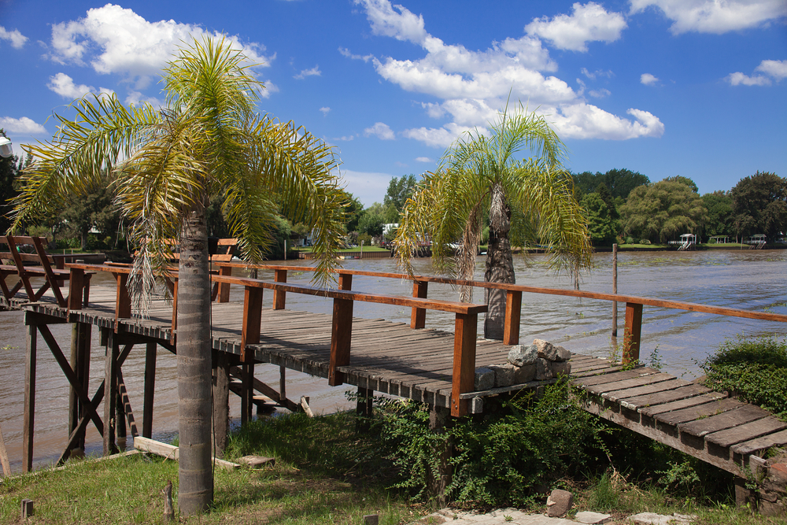

Descubre Lujan

San Antonio de Areco
Plaza Principal

La Plata
Some representative placeholder content for the second slide.
Luján
Some representative placeholder content for the third slide.

Delta del Tigre
Some representative placeholder content for the third slide.
Luján es una ciudad ubicada en la provincia de Buenos Aires, Argentina. Conocida por su Basílica de Nuestra Señora de Luján, es un importante centro de peregrinación religiosa en Argentina.
La Basílica de Luján es uno de los mayores símbolos de la fe católica en el país y atrae a millones de visitantes cada año. Además de la basílica, Luján cuenta con una hermosa plaza central y diversos lugares históricos.